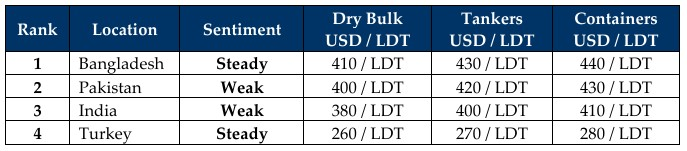

inWeekly Demolition Reports01/12/2025

Global market chaos continues post-Thanksgiving like a bad stomach after too much turkey. Steel plate prices were thehighlight of the entire sub-continent—and even China—where they unanimously retreated in unison this week, while the U.S. Dollar also decided to join in on the fun as it too retreated at all sub-continent locations (except—no surprise—Turkey!). Making matters worse are the rising freight markets that continue to surprise the industry, as the Baltic Exchange’s Dry Index climbed another 3.2% through the course of the week, hitting a new high since December 2023 as practically every segment assisted in with the rising rates. Oil, meanwhile, remains at 21st-century lows, idling with marginal fluctuations, yet it closed the week out at USD 59.16/Ton—a near 14% drop over the last 12 months.
As supply continues to be restricted by the widening net of sanctions and blacklists in addition to rising freight rates, it was still a kind gesture by the gods of tonnage that both Bangladesh and India mercifully reported fresh arrivals and deliveries at the waterfront, all while Pakistan’s dithering local anchorage returned zilch this week. Prices too remain fragile amidst dreadful fundamentals that haven’t gotten a chance to get off their respective trampolines, as most of the tonnage introduced to the markets is either an off-market questionably sourced unit or smaller LDT units that are regularly seeing sub-USD 400/Ton from key locations, creating a dual-priced reality for the markets.
Yet in the midst of uncertainty, a momentous development unraveled this week with the first Pakistani ship-recycling yard to be awarded HKC compliance, as Prime Green Recyclers became the first in the nation to join the array of international yards—bringing Pakistan into the new league. Prime Recyclers attained Bureau Veritas (BV) blessings after the requisite investment and infrastructure upgrades spanning this past year bore fruit, and the matter became critical after the Hong Kong Convention came into force on June 26th. This follows on the heels of 21 Bangladeshi yards receiving their HKC accreditations and a 22nd yard set to reportedly follow imminently, as compliance is firmly underway at both locations to revolutionize and improve domestic standards and catch up to Alang, where over 100 yards have been HKC compliant—some practically for over a decade now.
Overall, as market fundamentals remain confidently uncertain, prices have endured a turbulent ride across the board over the last few months. USD 400/LDT+ remains a struggle to achieve in some markets as steel and currencies continue to underperform, alongside the deadly dearth of candidates that has plagued markets for about four years now, with only a handful of sales taking place to increasingly hungry recyclers—particularly in a resurgent Bangladesh, which led the way for sub-continent pricing for another week. Another four weeks and another trip around the sun means the industry continues hoping for a market resurgence in 2026. Tough year!

📄 Download PDF: Ship-recycling-market-insight-Week-48-11-28-2025-Stumped_yet_Primed.pdfSource: GMS,Inc.https://www.gmsinc.net/gms_new/index.php/web